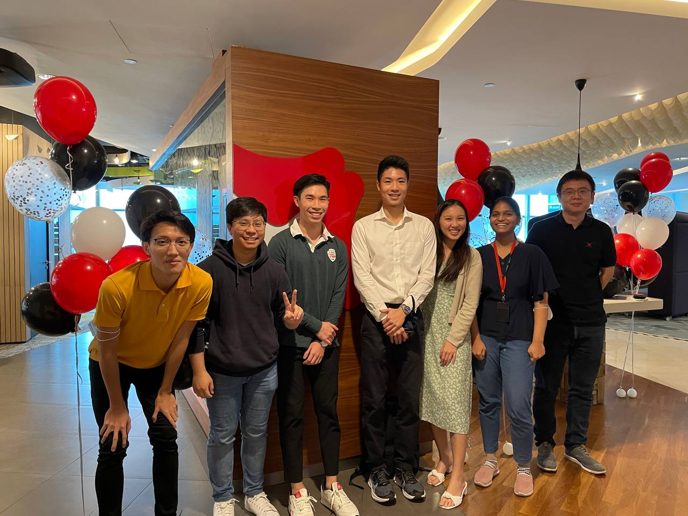

who are you?
I'm Rainer, a university student born, raised and based in Singapore. I've always had an interest in the wonders of technology and the possibilities it holds. It still tickles me to think about how most inventions we deem normal now would have boggled minds and popped eyes just decades ago, and how my current direction is (hopefully) leading me to do the same. A man can dream, can't he?
what do you do?
Well... I study. I'm pursuing a degree in Data Science and Artificial Intelligence at Nanyang Technological University which involves a lot of math and Python, among other things. Mathematically speaking, I am well versed in linear algebra, calculus and statistics, to name a few. I also have experience working with data science/visualisation tools such as pandas, numpy, matplotlib, and seaborn as well as various machine learning libraries like SKLearn, XGBoost, and TensorFlow 2. I have an interest in software engineering, with a knowledge of object-oriented languages like Java and Dart, and am keen on integrating data science in SWE. I've also done a little SparkAR instagram filter creation as part of a school commission. I train with the school rugby team, and I voluntarily feed the campus cats 🐱. Here's a picture of my friend and I from our faculty's instagram page:
what are your goals?
Great question. I'd like to divide this into short-term and long-term goals. In the short-term, I'd be delighted to expand my horizons and gain professional experience via internships related to my field. These include AI/ML project opportunites, data science, software engineering etc. If you're a hirer and want to contact me, please do so via the "Contact Me" link within the sidebar!
In the long-term, well, I've always wanted to do good in the world. Sounds like a load of cheese I know, but I ain't cheesin. I believe in the power of technology as both a catalyst for progress and a safeguard against adversity. For example, I've always believed in preserving the environment and believe that AI can have a profound impact on sustainabile technology. An example would be this small project my friends and I worked on, called the Massive Automated Recyclable Classifier (name credits to yours truly) that can be found in my github. Baby steps, I know - but we all start somewhere, right? Watch this demo video for said project:
what have you done?
I've recently had the opportunity to work with 6 other talented individuals on a software engineering project for a school course. While the experience was challenging, it was extremely gratifying learning new skills and seeing our ideas come to life. Some of the services and frameworks we used include Flutter, Firebase Storage, Cloud Firestore, HUAWEI Cloud services and more. If you're interested in social platforms and sports, check out our demo video here!
I've also participated in various hackathons, most memorably NUS' Hack&Roll 2022 where my team designed a Telegram bot to handle bill-splitting for lazy eaters (such as myself). Our idea breaks down large receipts into smaller amounts calculated for each individual with a quick snap of a photo, using Optical Character Recognition with pyTesseract. It was a really fun experience, and clinching the prize for Most Socially Useful Hack was a huge bonus! Check out our Devpost as well as the video below!
what about industry experience?
From May-July of 2022, I had the delightful opportunity to work in DBS Bank as a Data Science Intern in the Analytics Centre of Excellence. The experience was both fruitful and fulfilling, as I had the chance to work on various projects and was tasked to lay the foundation for one of them. It was certainly challenging as it was my first internship, but the mentors were helpful and welcoming and imparted a lot of wisdom in me that I am extremely grateful for. I also had a lot of fun at the company events and met many like-minded and capable people during my stint there. Here's a pic of me and some of my fellow interns!
...anything actually interesting?
OUCH buddy... but yeah, I guess it really has just been me rambling on about typical student/career stuff hasn't it? I guess I should feel lucky you even bothered reading to this point. You're the best 😍. I really enjoy exercise and sports! Rugby's my fav, been playing since I was 13. I also regularly go to the gym. I love animals too, getting a pet (or pets) is definitely on my bucket list. I'd say dogs over cats, but only just barely, so to all cat-people please don't come for my head.
Oh, and I like listening to music! I don't discriminate against genres, but I do have my go-to playlists. I also dabble in guitar, although I'm not very good at it 😞. Still, it's fun learning and attempting to play pieces that I like. If you have any song recommendations, give me a hoot! Lastly, I'd really like to travel more, and I'm super grateful that we're able to zoom across the globe with a few simple clicks and witness all the world has to offer. Here are some pictures from when I was in Bali:
I also had the luxury of doing part of the Tour du Mont Blanc in the Alps, where we passed through Switzerland, France and Italy! It was a truly humbling and awesome experience as we scaled steep ascents and traversed unforgiving descents while basking in the glory of the mountains. I'd like to share some pictures I took with my friends, but they don't really do the trip justice. It's a once in a lifetime journey you just have to see for yourself!

here are my socials, let's get in touch!
School email: rkam002@ntu.edu.sg
Personal email: rainerkamiw@gmail.com
Others: